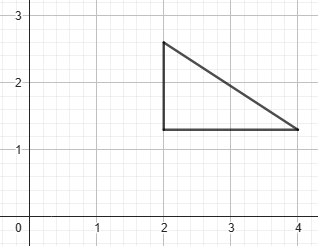

Cálculos com Matrizes
É possível fazer diversos cálculos com matrizes, incluindo adição, subtração, multiplicação por um escalar e multiplicação por outra matriz.
Primeiramente, vamos ver como fazer adição e subtração de matrizes. Para fazer estas operações, precisamos que as duas matrizes tenham o número de linhas e colunas iguais.
Após ter as duas matrizes, basta somar ou subtrair o valor a11 da matriz 1 pelo valor a11 da matriz 2 e assim por diante, com todos os valores.
| 0 | 1 | 9 |
| 4 | 6 | 3 |
| -6 | 3 | 1 |
| 3 | 0 | 9 |
| -6 | 4 | 10 |
| 7 | 6 | 12 |
| 0 | 1 | 9 |
| 4 | 6 | 3 |
| -6 | 3 | 1 |
| 3 | 0 | 9 |
| 6 | -2 | 8 |
| 1 | 6 | -6 |
Próxima operação: multiplicação por um número escalar. Para fazer a multiplicação de uma matriz por um único número, basta multiplicar todos os valores da matriz por esse número, bem simples.
| 0 | 1 | 9 |
| 4 | 6 | 3 |
| 0 | 3 | 27 |
| 12 | 18 | 9 |
Agora, temos a multiplicação de uma matriz por outra matriz. Precisamos nos certificar que o número de COLUNAS da matriz 1 é igual ao número de LINHAS da matriz 2.
Depois de confirmar isso, multiplicamos cada elemento da linha da primeira matriz pelos elementos correspondentes da coluna da segunda matriz e somamos os resultados. Esse valor será colocado na nova matriz. Repetimos esse processo para todas as combinações de linhas e colunas. Veja o exemplo abaixo:
| 0 | 1 | 9 |
| 4 | 6 | 3 |
| -1 | 0 |
| 1 | 9 |
| 7 | 3 |
| (0 * -1) + (1 * 1) + (9 * 7) | (0 * 0) + (1 * 9) + (9 * 3) |
| (4 * -1) + (6 * 1) + (3 * 7) | (4 * 0) + (6 * 9) + (3 * 3) |
| 64 | 36 |
| 23 | 63 |
Como podemos ver, o resultado foi uma matriz 2x2, que é o número de linhas da matriz 1 x o número de colunas da matriz 2.
Transformações Gráficas
As matrizes podem ser usadas para representar imagens em planos cartesianos, vamos olhar uma matriz e sua representação gráfica:
| 1 | 1 | 2 |
| 1 | 2 | 1 |
Fonte: Geogebra
Como podemos ver, a linha 1 é o X, e a linha 2 é o Y de cada ponto.
Com isso, podemos fazer algumas operações para transformar essa figura.
Para começar, deslocamento. Caso queira mover a figura 2 pontos para a direita, por exemplo, basta somar todos os valores do X por 2. E caso queira mover a figura 1 ponto para baixo, basta subtrair 1 de todos os valores do Y.
| 3 | 3 | 4 |
| 0 | 1 | 0 |
Fonte: Geogebra
Novamente usando a primeira figura, podemos fazer uma reflexão, espelhando no X, Y ou ambos. Para isso, caso queira fazer a reflexão em torno do Y, basta inverter o sinal dos valores do X. Caso queira fazer a reflexão em torno do X, basta inverter o sinal dos valores do Y. E, por fim, caso queria fazer a reflexão espelhando a imagem no X e no Y, basta trocar o sinal da matriz inteira.
Abaixo, respectivamente, há as matrizes que podem ser multiplicadas para fazer uma reflexão em torno do X, em torno do Y, e espelhando ambos X e Y.
| -1 | 0 |
| 0 | 1 |
| 1 | 0 |
| 0 | -1 |
| -1 | 0 |
| 0 | -1 |
Basta fazer inversão de sinal dos valores ao invés de fazer toda a multiplicação, mas é bom saber quais matrizes fazem esse trabalho.
Abaixo, há uma reflexão da figura 1 em torno do X:
| 1 | 1 | 2 |
| -1 | -2 | -1 |
Fonte: Geogebra
Como podemos ver, o sinal de todos os valores do Y, linha 2, inverteu, espelhando a figura.
Próxima transformação gráfica é a rotação. Para realizar a rotação de uma figura, basta mutiplicar a matriz da figura por essa matriz, substituindo os valores, sendo θ o ângulo no qual será rotacionada a figura.
| cosθ | -senθ |
| senθ | cosθ |
Abaixo, há o exemplo de rotação da figura 1. A imagem foi rotacionada em 63°.
| 0.98 | -0.89 |
| 0.89 | 0.98 |
| 1 | 1 | 2 |
| 1 | 2 | 1 |
| 0.09 | -0.80 | 1.07 |
| 1.87 | 2.85 | 2.76 |
Fonte: Geogebra
E, por fim, a última transformação é a escala. Para fazer a escala, basta multiplicar a matriz por essa matriz, substituindo os valores, sendo Sx a escala do X e Sy a escala do Y.
| Sx | 0 |
| 0 | Sy |
Abaixo, há o exemplo da figura 1 com o X aumentadoa em 2 vezes e o Y aumentado em 1.3 vezes.
| 1 | 1 | 2 |
| 1 | 2 | 1 |
| 2 | 0 |
| 0 | 1.3 |
| 2 | 2 | 4 |
| 1.3 | 2.6 | 1.3 |
 Fonte: Geogebra
Como podemos ver, nesse caso, a imagem foi distorcida, já que o valor de escala do X e do Y foram diferentes.
Além disso, basta multiplicar os valores X pelo valor de escala do X e os valores Y pelo valor de escada do Y, não é necessário fazer a conta de multiplicação inteira para fazer a escala.